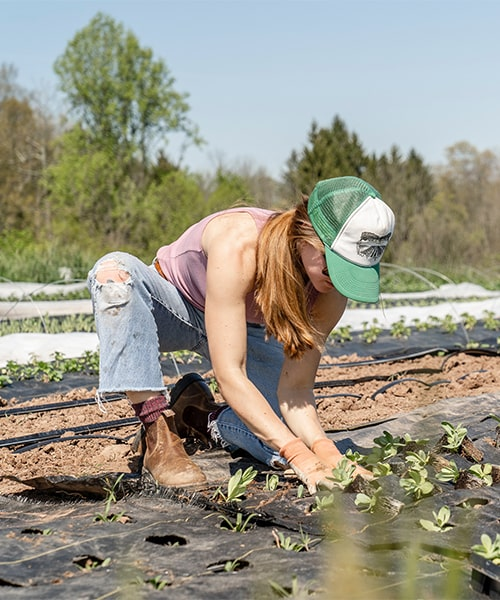

12Aug

Recipes · Tomatoes
Five ways to use a flood of summer tomatoes
From blistered confit to a sauce you'll bottle for winter — make the most of peak tomato season with these simple, honest recipes.
 Elena Whitfield
Read →
Elena Whitfield
Read →


 Martha Whitfield
Martha Whitfield